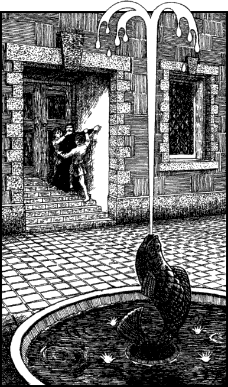

250
You follow a broad avenue which is teeming with commercial travellers, people who have come here from the four corners of Magnamund to trade their wares. Merchants, farmers, jewellers, and slaves are just a few of the people you observe as you ride towards the heart of this great city. Everywhere is bustle and hurry, even at this late hour.
At a fountain of fresh water you stop to allow your horse to drink. As you sit and wait, you observe a struggle taking place on a flight of stone steps close by. Two greasy young louts are attacking a woman who is attired in a long black dress and black head scarf, indicating that she has been recently widowed. Incensed by the sight of this cowardly attack, you leap from your horse and rush towards the steps with your weapon drawn. As you begin to climb the stairs, to your surprise you see the two louts and the woman cease their struggle. Together they run to the top of the steps and disappear through a door which they slam shut behind them. On reaching it you discover it has been bolted shut from the inside. You are trying to make sense of the situation when suddenly you realize what has happened. From the top of the steps you look down at the fountain below to see that your horse has now disappeared; he has been stolen. Cursing your own naïveté, you descend the steps and continue on foot along the busy avenue until you arrive at a place called Dhanamet Square where a busy evening bazaar is taking place. You are mindful of your need to find lodging for the night, and also some new means by which you will be able to continue your journey to Elzian. As you stop to look at the market and the façades of the shops and taverns which encircle it, your eye is caught by the gaily decorated merchants’ stalls and the exotic wares they display.

If you wish to take a closer look at the market stalls, turn to 7.
If you choose instead to try to find a place to stay for the night, turn to 236.